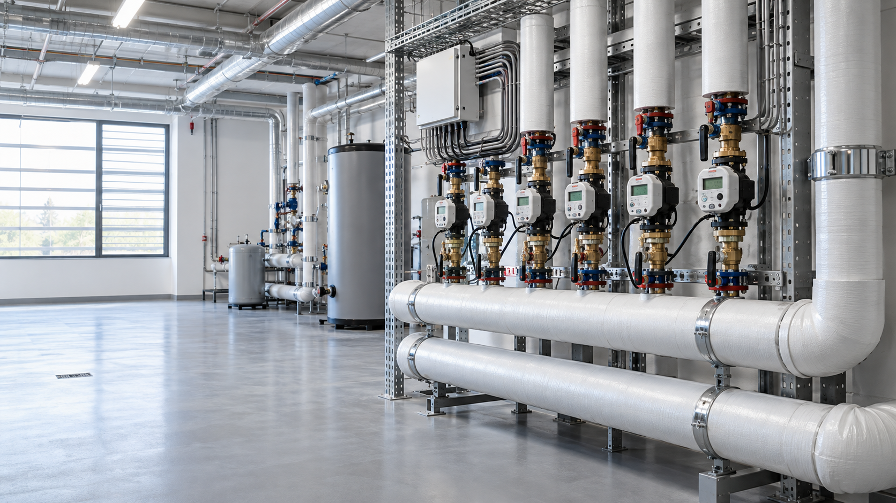
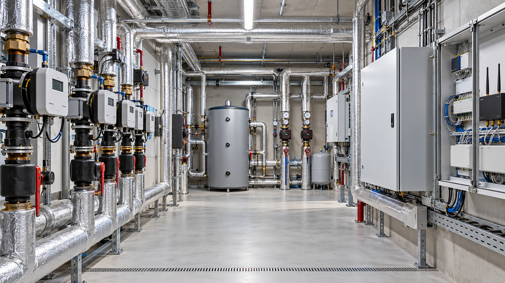
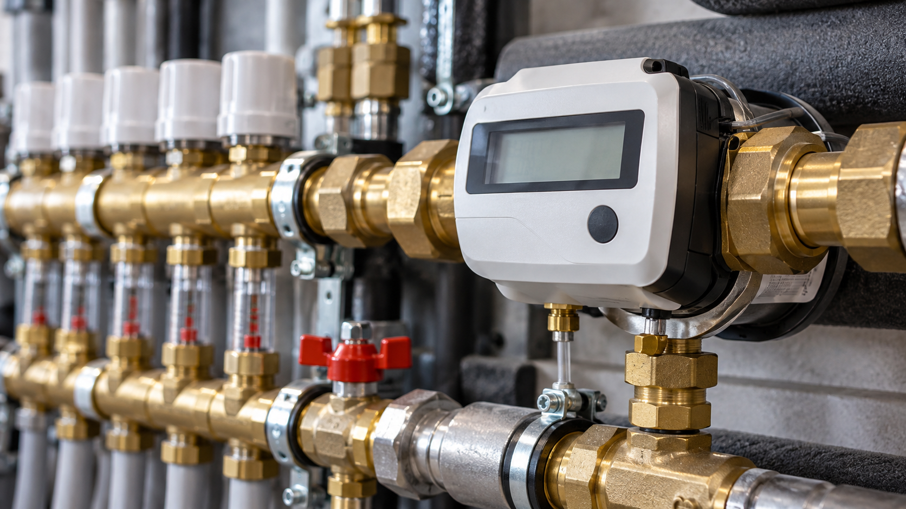
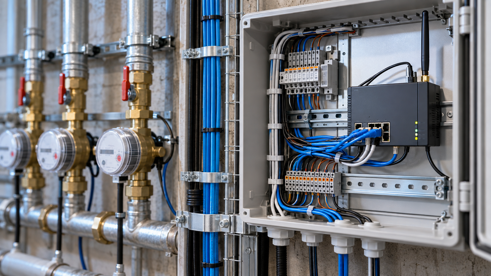
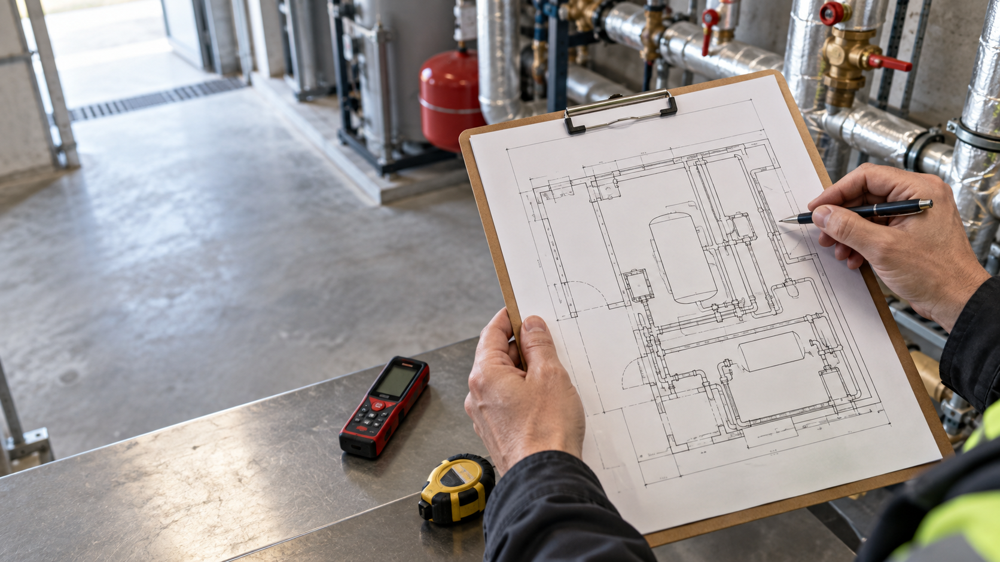
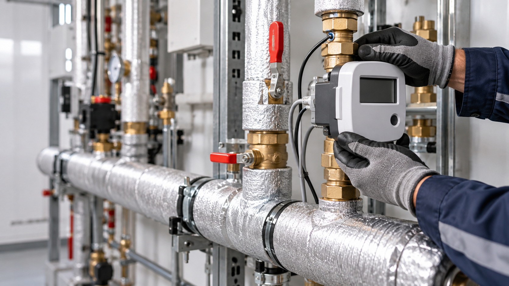

Línea 03 — Contabilización
Contabilización de consumos.
Equipos de medición, comunicaciones y servicios. Un dato justo, medible y verificable.
Más allá del contador.
02 — Servicios
Auditoría energética
Diagnóstico y propuesta de mejoraPlataforma de consumos
Visualización y reparto verificable
Telegestión de sala
Supervisión remota de equiposToda la solución, paso a paso.
03 — Gama y proceso

Medición
Contadores y lecturas
Comunicaciones
Transmisión de datosServicios
Auditoría, plataforma y telegestión
Solicitud
Paso 01 · Cuéntanos tu instalaciónPropuesta
Paso 02 · Estudio y presupuesto